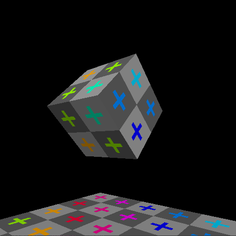
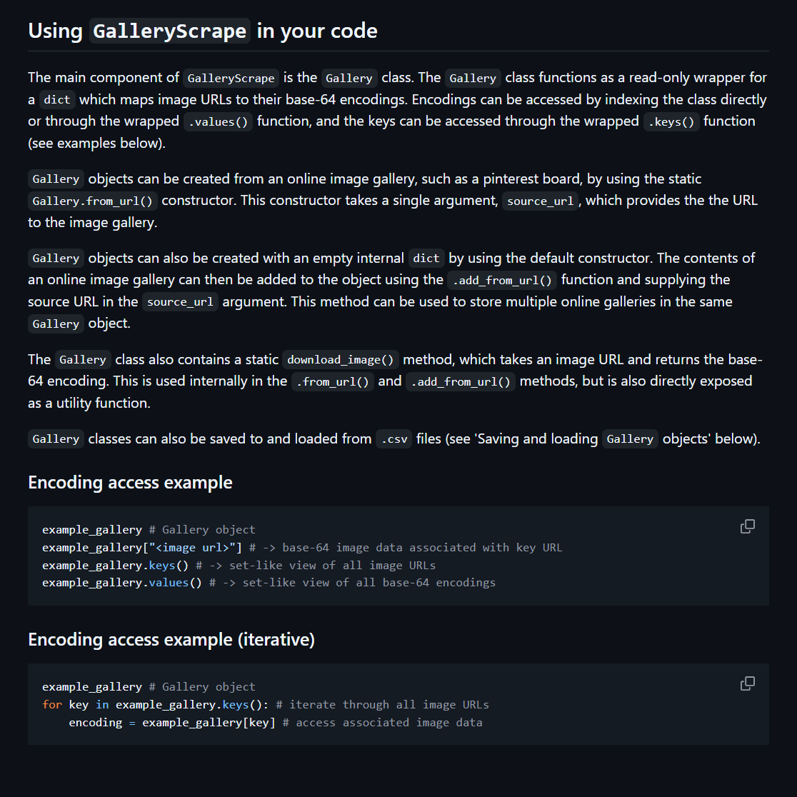

- searching for books and sourcing data via the Google Books API,
- JSON serialization, local saves, and imports/exports for all app data and configurations,
- customizable visual themes,
- a barcode scanner to automatically find physical books by their ISBN,
- and a stats page to track pages read and books completed by various time periods, the data for which is automatically saved when reading progress is updated.

Software Rasterizer
A CPU-based 3D renderer written from scratch in C using SDL3 for window management, events, and writing pixels. Most algorithms are based on the work done by Sebastian Lague in this video, but all code was adapted to running in C without access to Unity Engine rendering, classes, or objects by me. Implemented features include:
- file parsing and importing 3D models from .obj files,
- manual projection of models to screen space,
- manual rasterization of screenspace triangles,
- UV-based texture mapping and interpolation,
- support for rotation, translation, and scaling of models,
- basic global lighting,
- simple first-person camera movement,
- and near-plane clipping of triangles.

FBTNTools
A simplified wrapper for several APIs, to be used by collaborators on a generative AI research project who were newer to Python. It provides two simplified wrappers:
- GalleryScrape, for downloading images from online galleries, converting them to base-64 encodings, and saving those encodings, and
- ChatUtils, for interacting with the then-current ChatGPT-4o via API.
The resource project, which had been on documenting possible
biases along the lines of gender, 'gendered' interests like
fashion, and race in ChatGPT's image generation, was
discontinued when the supervising professor left for another
position, but the source code can be viewed on
GitHub.
The GitHub repository also includes detailed installation and usage information in its README.md.